lemme tell u a bed time story . i promise that u r gonna like it ;)

once upon a time , a family went to a jungle for a 2 days trip . they were a happy family with a lot of chidren. the kids were being kid and messing around , the big brother got tired and decided to sit somewhere and take a quick rest. he found a broken tree and sat there , he realized that something is wrong !
he saw some beautiful eggs in a basket in the middle of nowhere . after staring at them for like 2 hours , he finally decided to pick them up . when he came back to the آغوش خانواده his mother asked him worriedly where has he been ?
he explained the whole situation , mother called an emergency family meeting to make a decision for the eggs fate, all of them agreed on frying the eggs , but the smallest kid , stole an egg and hid it in his pocket.

days passed in a blink of an eye and the kid took good care of the stolen egg . he remembered that cloudy day , they were on a trip but the kid was sad and his mood was cloudy just like the weather. in that day .. his mother made dinner with those eggs, he tried his best but yet.. failed to forget the sound of cracking the poor innocent eggs .. at that night he refused to eat absolutely anything. he was just a child. he was just a child!
he was looking at his mother frightened an angry like she was an actual murderer. he kept thinking that why those damn seconds won't pass and why the freaking eggs won't get fryed.
poor child didn't talk to his mommy for two days. every one was concern about him and he still refused talking. he kept thinking and thinking , over and over , again and again ! it was late so he finally falled sleep. the next morning was an important day cause he had made his decision. he was going to take care of the egg for the rest of his life.
they came back to their home . he never said a single word to his parents about what he went through. months passed and he kept the egg in a warm and soft place. he kept it under his pillow .. the egg was his friend now .. cause he talked to the egg every single night like it was alive, he kissed it and said good night to it every night ..

the kid was having good time with his new friend but on a spring day every thing suddenly changed he heard cracking sound .. he remembered those cursed days when they were on the trip .. he remembered what happend to other eggs .. he was going to cry .. he startet crying. he thought the he is going to lose his friend for good. how could he possibebly carry on without his bestie .. he was lost in his thoughts that he heard a weird noise. he ignored it. but the noise kept raising up. the kid opened his eye . they were filled with tears. the noise was coming from the cracked egg .. -- jik jik, jik jik-- he couldn't trust his eyes , he thought he was hallucinating. but it was real. the kid became the happiest person in the entire universe!
months kept passing but the kid didn't even realized that. he was having the best days of his life now the whole family knew about joje ;) he made her a small box next to his bed so he could hear her voice every night before sleep :)

the joje was growing up, the kid spends all of his time with her he hugged her every night , یکمم لاس میزد باهاش , it was truely the best days of his life.
joje keep growing more and more and he start questioning about his family , the kid didn't know what to say , and he kept saying that she is gonna found out when she growed up an become an adult.
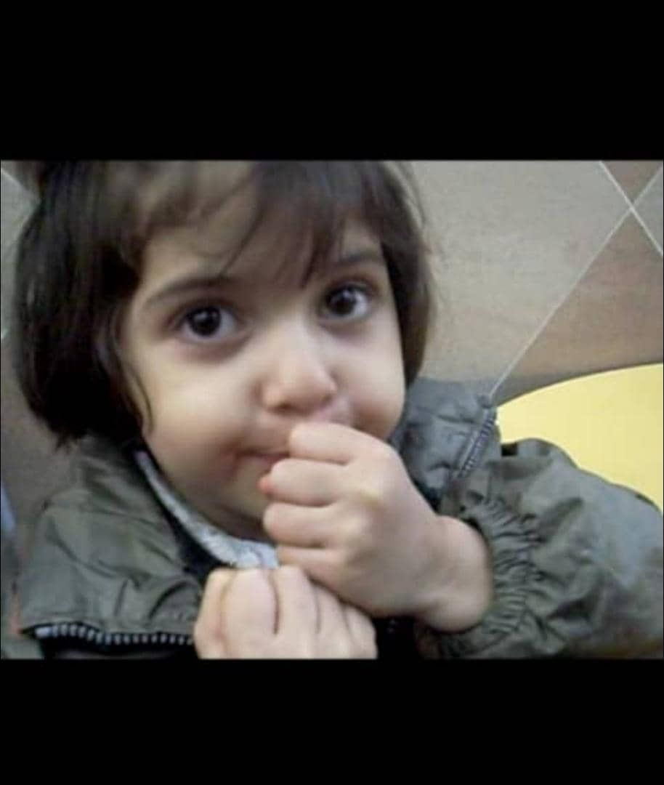 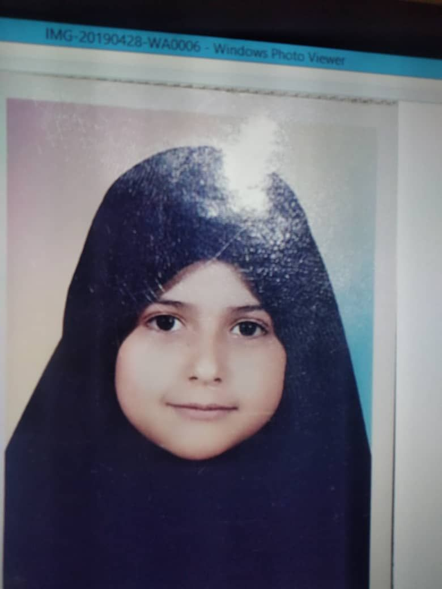 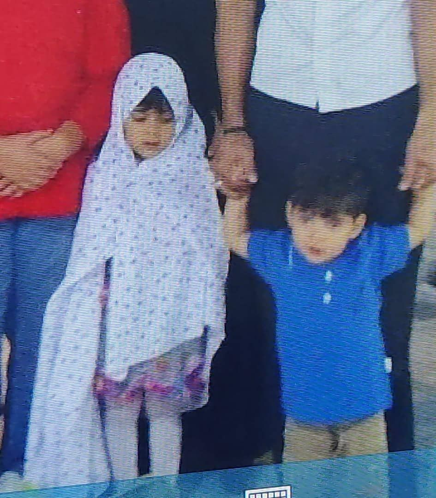 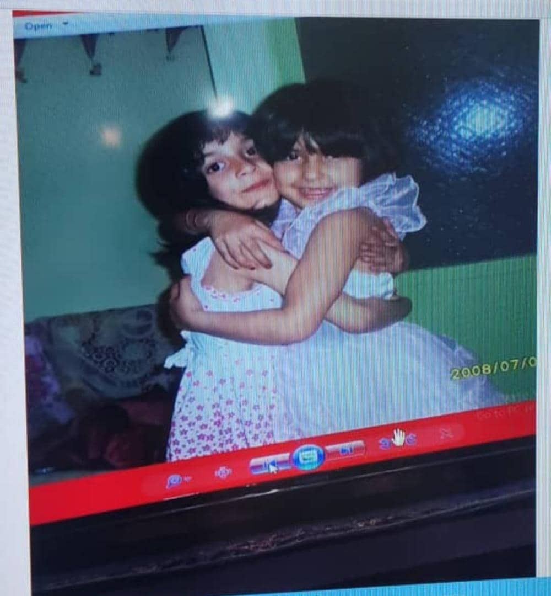(isn't she the cutest for real?)
by spending so much time with humans, joje bacame an actual human being, she was the cutes little girl -- the kid thought so -- he was gonna miss the -- jik jik -- sound , but now he had an actual best friend, he accepted that now she is old enough and she deserve to know the truth about her family.
he explained everything to her while he was holding her between his arms and even tho himself was sad about that day that everything happend, he hold back his tears and decided to be there for the joje, she was drowning in her tears and the kids hand couldn't clean her tears.
joje sleep that night very late, when she woke up, she was still in kids arms :) it was a long night for her, it was hard to take all of that sad news at once, she was happy that the kid was there for her ..
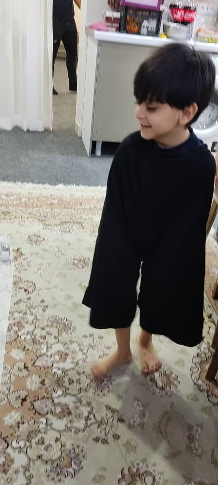it's been 12 years since then .. the kid and joje are still besties. joje has gone through a lot in this years . she made lots of friends.
and in all this years joje and the kid was there for eachothers beside all the complications that their relationship had ..
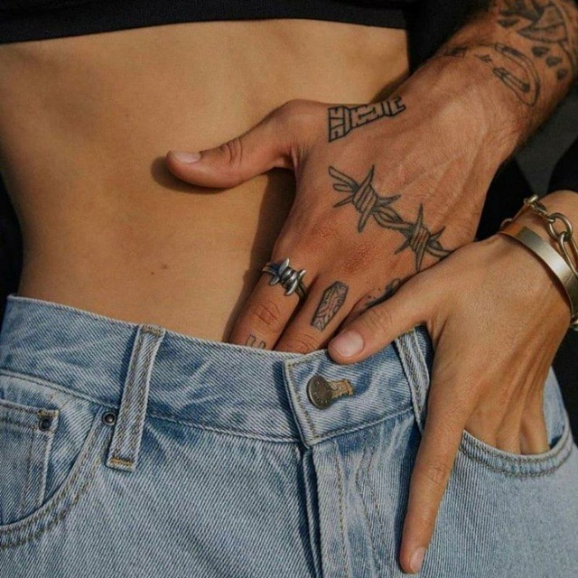(by complications i mean this:)
but now they are just friends (except for the kisses) and they are gonna remain the same till the شرایط become suitable :)
here is some memories :
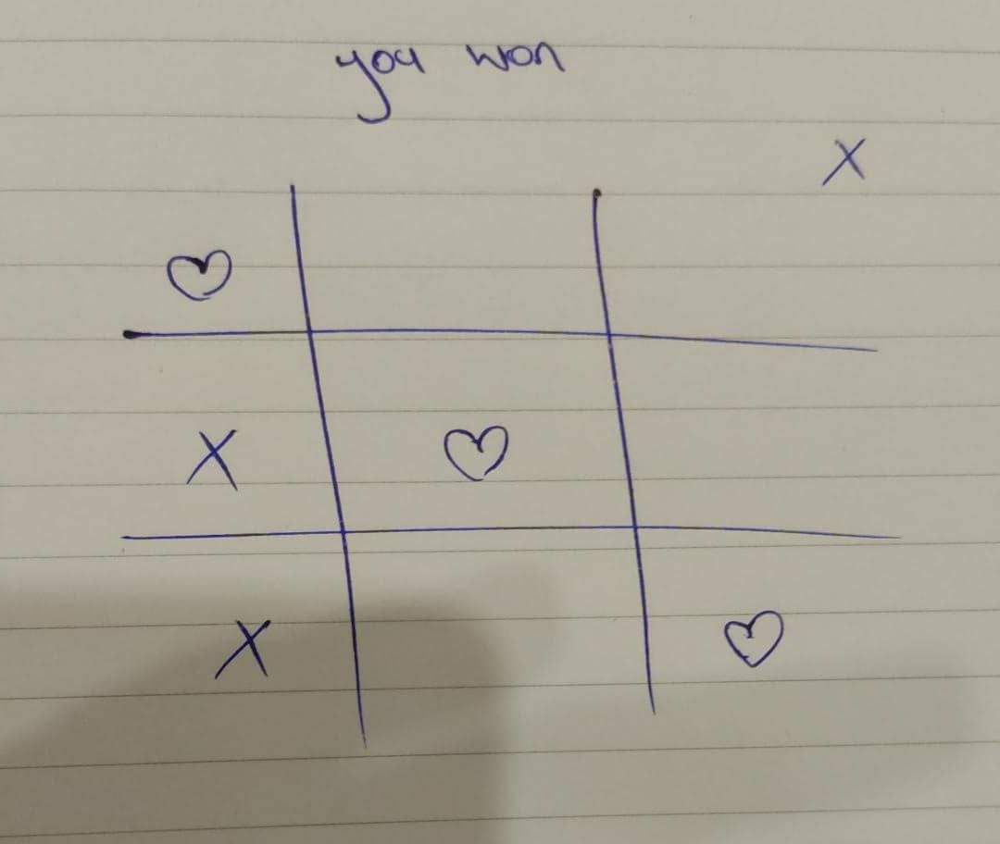 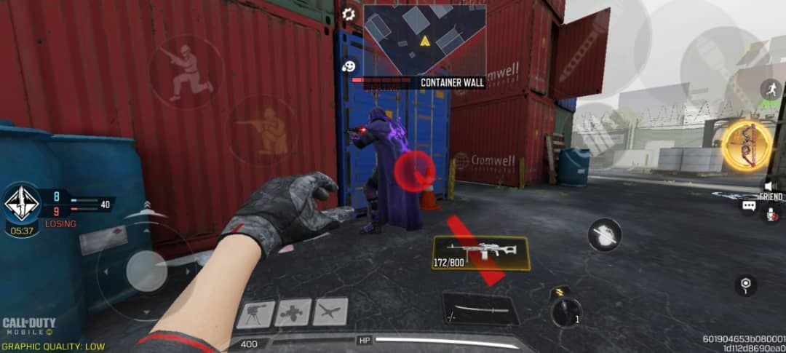 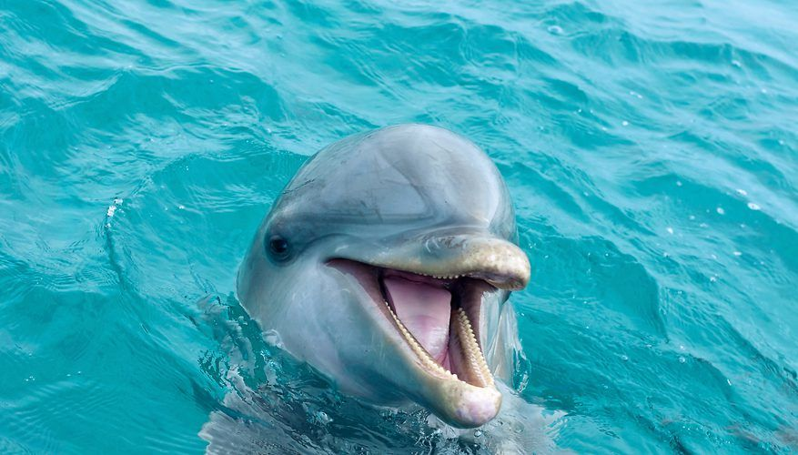 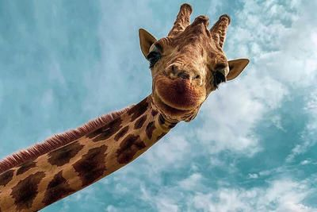 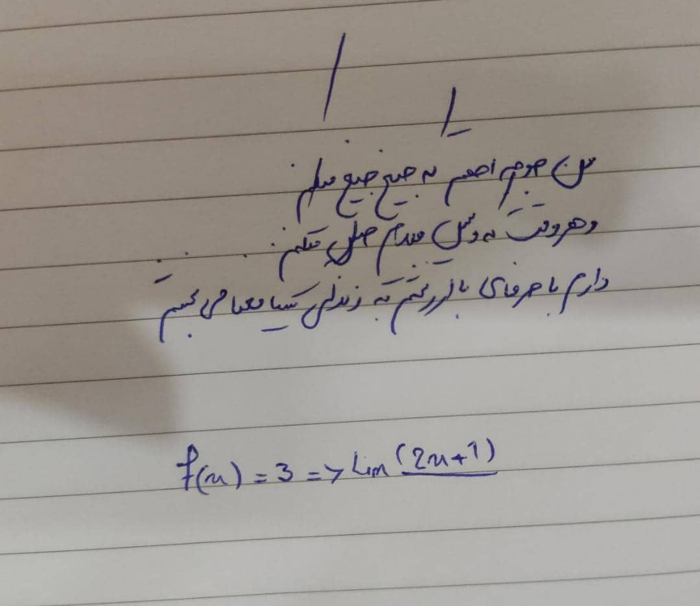 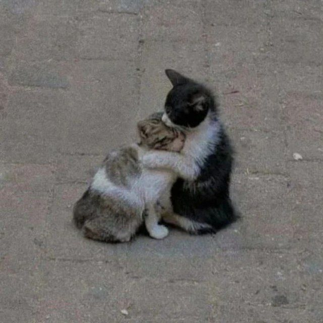 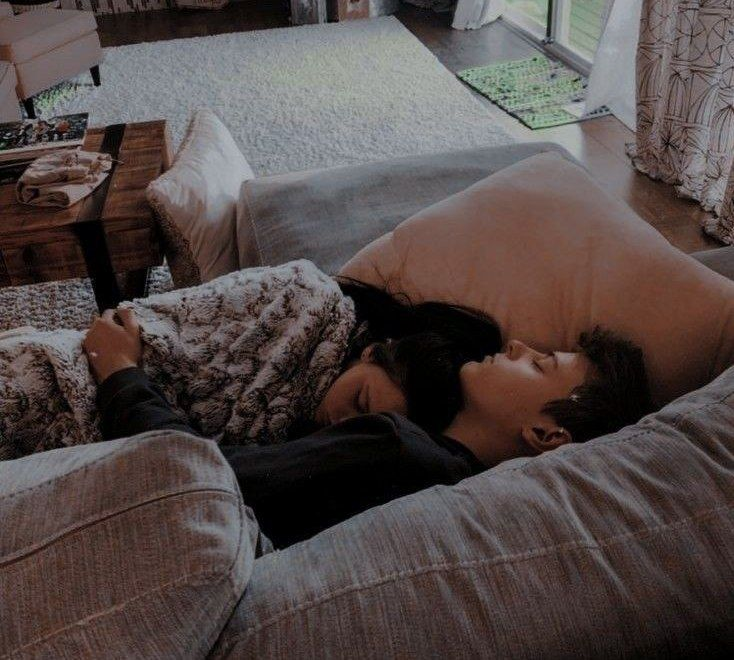well.. good night sleepyhead :)
Love u !
remember this ?
(i can't get over it!)
.................
who said that we must have the exact same taste in music !?
.................
i actually kinda like this one ;)
i almost forgot to tell u ..
last year i heard a weird news , at first i couldn't believe it,
cause it didn't make any sense , but then i saw it with my own eyes,
the story was about a man, a blind man .. that he didn't have
any wish except seeing again! one day the blind man got alzheimer
and forgot that he is blind , it was at this moment that he realized
something, he was able to see again !!!!!!!!
so if u wanna get
alzheimer and forgot all of ur problems, say i love u to Sina 10 times ;)
here is the proof :
this counter shows how much i love u:
number guessing game
roll 3 dice
don't know why i added this one